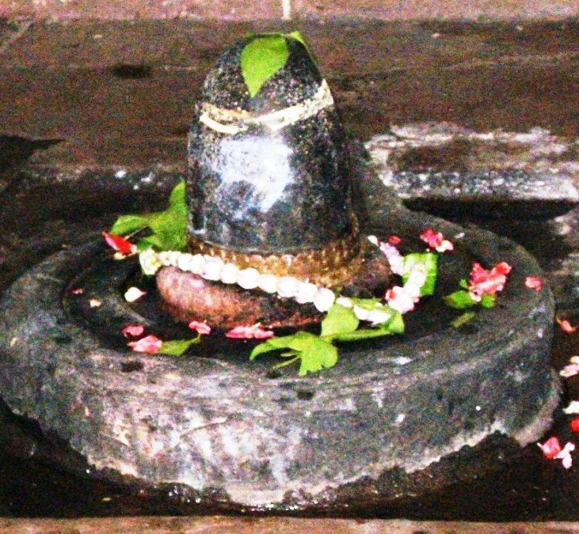

<?xml version="1.0" encoding="UTF-8"?><rss version="2.0"
	xmlns:content="http://purl.org/rss/1.0/modules/content/"
	xmlns:wfw="http://wellformedweb.org/CommentAPI/"
	xmlns:dc="http://purl.org/dc/elements/1.1/"
	xmlns:atom="http://www.w3.org/2005/Atom"
	xmlns:sy="http://purl.org/rss/1.0/modules/syndication/"
	xmlns:slash="http://purl.org/rss/1.0/modules/slash/"
	>

<channel>
	<title>Vishalaksheeshwar &#8211; Varanasi Temples</title>
	<atom:link href="index.html" rel="self" type="application/rss+xml" />
	<link>../../../../../index.html</link>
	<description>Temples of Varanasi as referred to in Kashi Khand</description>
	<lastBuildDate>Thu, 19 Jun 2025 05:16:46 +0000</lastBuildDate>
	<language>en-US</language>
	<sy:updatePeriod>hourly</sy:updatePeriod>
	<sy:updateFrequency>1</sy:updateFrequency>
	<generator>https://wordpress.org/?v=4.6.29</generator>
	<item>
		<title>VISHALAKSHEESHWAR</title>
		<link>../../../../../shiva-temples/vishalaksheeshwar/index.html</link>
		<pubDate>Tue, 11 May 2010 06:48:50 +0000</pubDate>
		<dc:creator><![CDATA[admin]]></dc:creator>
				<category><![CDATA[Other Shiva Temples (S-Y)]]></category>
		<category><![CDATA[Shiva Temples]]></category>
		<category><![CDATA[Vishalaksheeshwar]]></category>
		<category><![CDATA[mir ghat]]></category>
		<category><![CDATA[vishala]]></category>

		<guid isPermaLink="false">../../../../../p=460.html</guid>
		<description><![CDATA[Goddess Parvaty wanted to know about  various Shiv Lings and deities at several places in Kashi and Lord Shiva was pleased to narrate about such deities (Kashi Khand, Chapter 97). Kashi Khand mentions one Shiv Ling named Vishalaksheeshwar in the vicinity of Vishalakshy Devi. (VISHALAKSHEESHWAR) Devotees who worship Vishalaksheeshwar will be blessed with happiness and [&#8230;]]]></description>
				<content:encoded><![CDATA[<p>Goddess Parvaty wanted to know about  various Shiv Lings and deities at several places in Kashi and Lord Shiva was pleased to narrate about such deities (Kashi Khand, Chapter 97).</p>
<p>Kashi Khand mentions one Shiv Ling named Vishalaksheeshwar in the vicinity of Vishalakshy Devi.</p>
<p></p>
<p style="text-align: center;"><strong>(VISHALAKSHEESHWAR)</strong></p>
<p>Devotees who worship Vishalaksheeshwar will be blessed with happiness and prosperity.</p>
<h2>LOCATION OF VISHALAKSHEESHWAR</h2>
<p>Devotees can find Vishalaksheeshwar at D.3/85, in the premises of Vishalakshy Temple at Mir Ghat. They can travel upto Dasaswamedh Vishwanath Gulli or Bansphatak Vishwanath Gulli by rickshaw and walk on foot to this place.  Devotees generally combine prayers at this temple alongwith darshan of Visweshwar / Annapurna temple.</p>
<p>Location of Vishalakshy Devi temple as per Google Map is given in the following Link :</p>
<p><a href="https://www.google.com/maps/place/Shri+Vishalakshi+Mata+Shaktipeeth+Temple,+Kashi/@25.3099723,83.0097214,17z/data=!4m12!1m6!3m5!1s0x398e2fa2e0d52caf:0x604f40f8d885c08!2sGanga+Aditya+Temple+-+Dwadash+Aditya+Kashi+Khand!8m2!3d25.3099258!4d83.0130915!3m4!1s0x0:0xa9e32fa23a4060c1!8m2!3d25.3099723!4d83.0119104">https://www.google.com/maps/place/Shri+Vishalakshi+Mata+Shaktipeeth+Temple,+Kashi/@25.3099723,83.0097214,17z/data=!4m12!1m6!3m5!1s0x398e2fa2e0d52caf:0x604f40f8d885c08!2sGanga+Aditya+Temple+-+Dwadash+Aditya+Kashi+Khand!8m2!3d25.3099258!4d83.0130915!3m4!1s0x0:0xa9e32fa23a4060c1!8m2!3d25.3099723!4d83.0119104<br />
</a></p>
<p>The entire area encompassing Vishalakshy Devi, Dharmeshwar, Vishwa Bhuja Gauri etc. is a powerful Shakti Peeth known as Dharma Peeth.</p>
<p>&nbsp;</p>
<p><strong>Please watch our YouTube Video about Vishalaksheeshwar at following Link</strong></p>
<p>&nbsp;</p>
<p><a href="https://www.youtube.com/watch?v=sNjQ1lbIzmA&amp;t=17s">https://www.youtube.com/watch?v=sNjQ1lbIzmA&amp;t=17s</a></p>
<p>&nbsp;</p>
<p>&nbsp;</p>
<p><strong><span style="text-decoration: underline;">TYPES OF POOJA</span></strong></p>
<p>The temple is open from 04.30 a.m. in the morning to 11.00 a.m. and from 05.00 p.m. to 10.00 p.m.  The timings may change.  Aarties are held in the morning and evening.</p>
]]></content:encoded>
			</item>
	</channel>
</rss>
